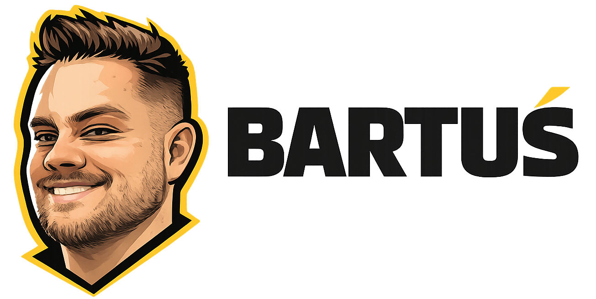
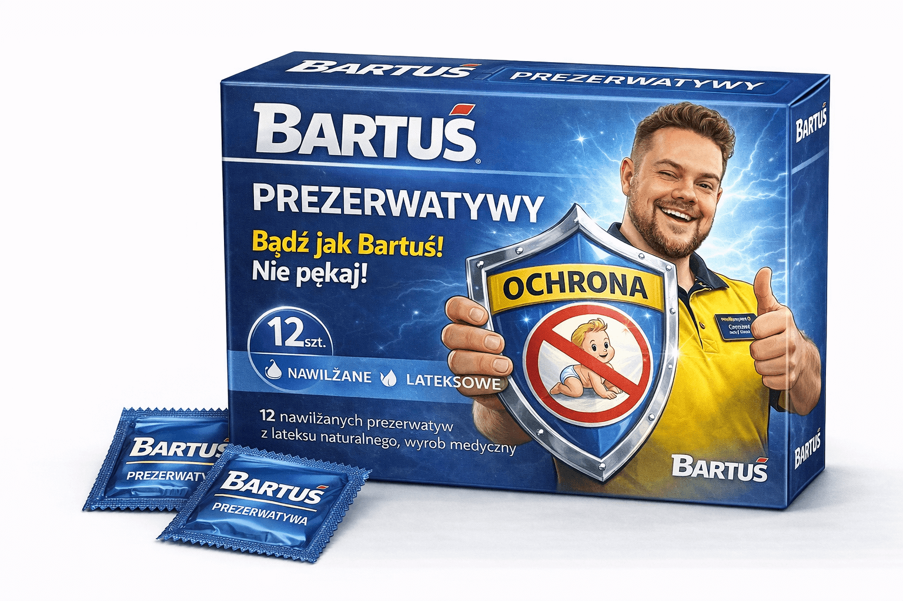
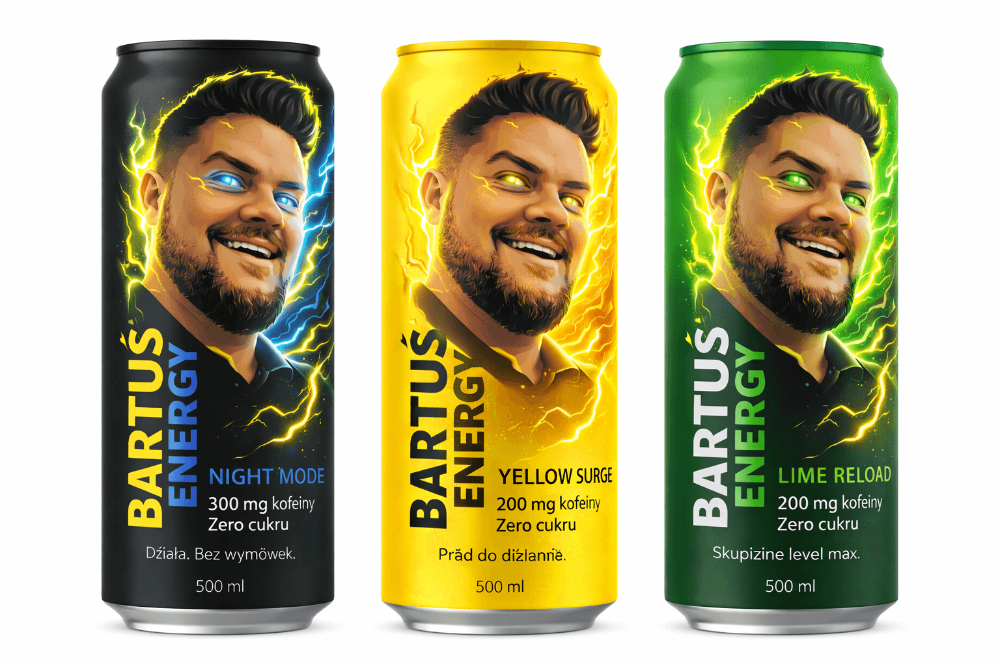
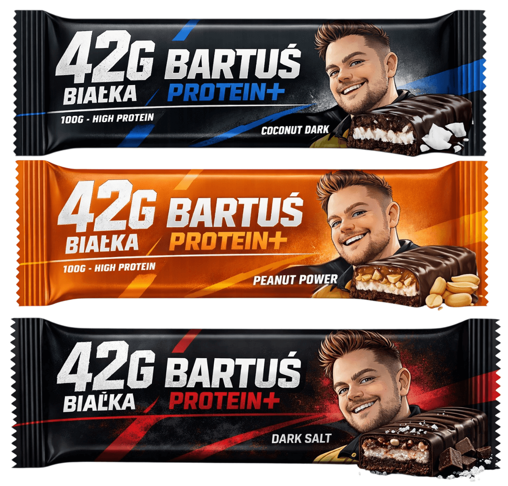
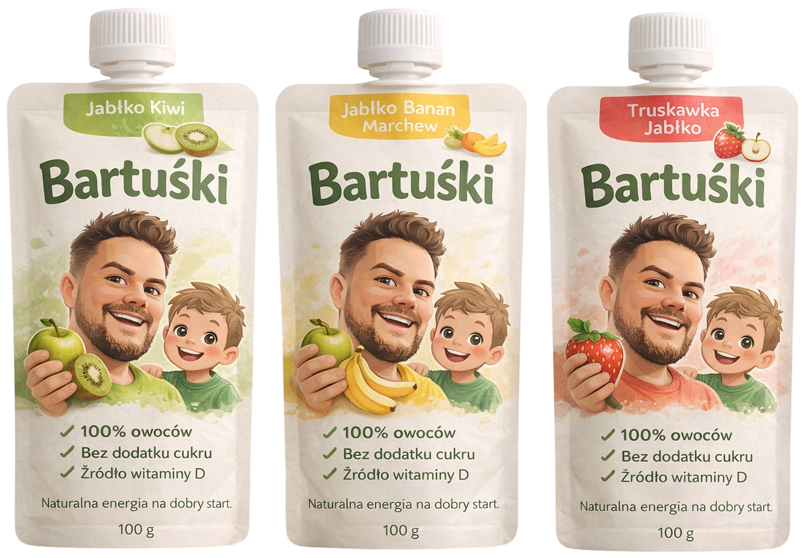
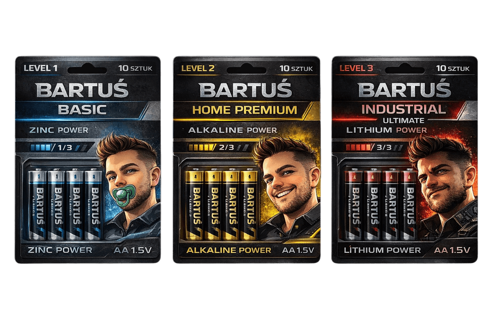

Bartuś to marka produktów codziennego użytku, które po prostu mają działać. Bez wielkich haseł i bez udawania premium za wszelką cenę. Robimy rzeczy użytkowe — od energii i sportu po odpowiedzialne decyzje — w swoim stylu. Czasem poważnie. Czasem z przymrużeniem oka. Ale zawsze konkretnie.
Każdy produkt powstaje z myślą o realnym działaniu, a nie obietnicach marketingowych.
Liczy się detal. Smak, wygoda, trwałość — to, co czujesz w użyciu. Nasze produkty sprawiają radość!
Nie ma drugiej takiej marki. Różne kategorie, jedna spójna tożsamość.

Flagowy produkt marki. Wysokiej jakości lateks, testowane na ludziach, zapewniające bezpieczeństwo i komfort użytkowania. Świadoma decyzja zaczyna się od odpowiedniego wyboru. Kliknij i sprawdź ile zaoszczędzisz z naszymi prezerwatywami!
24,99 zł
Napój funkcjonalny zawierający 300 mg kofeiny w puszce. Stworzony z myślą o maksymalnej koncentracji i wydajności. Zero cukru, maksymalna efektywność działania.
6,99 zł
Baton proteinowy zawierający 42 g białka w 100 g produktu. Idealny po treningu lub jako pełnowartościowa przekąska dla osób aktywnych fizycznie.
7,99 zł
Owocowo-warzywne musy bez dodatku cukru. Prosty skład i naturalny smak, idealne jako element zbilansowanej diety najmłodszych.
3,99 zł
Trzy poziomy mocy. Jeden system. Od codziennej stabilności po tryb bojowy Industrial. Wybierz swój LEVEL i zasilaj swoje gadżety bez kompromisów!
14,99 złMarka Bartuś rozwija się dynamicznie. Nowe linie produktów, nowe poziomy mocy i nowe kategorie pojawią się w najbliższym czasie.
Marka Bartuś powstała z potrzeby tworzenia produktów, które łączą funkcjonalność z odpowiedzialnym podejściem. Od chemii domowej po produkty lifestyle – naszym celem jest dostarczanie jakości, która ma sens.
BARTUŚ CONCEPT BRAND
Produkty koncepcyjne - brak możliwości zakupu!
Marka koncepcyjna BARTUŚ